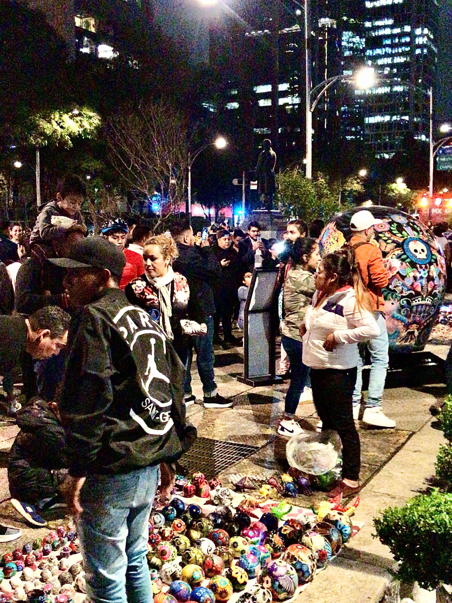
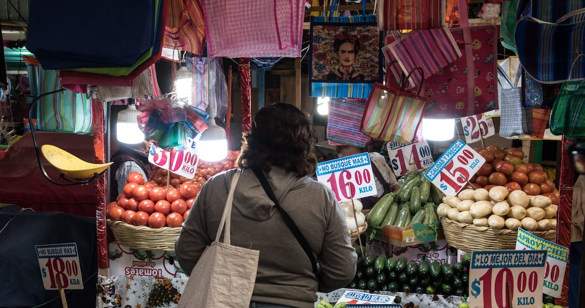
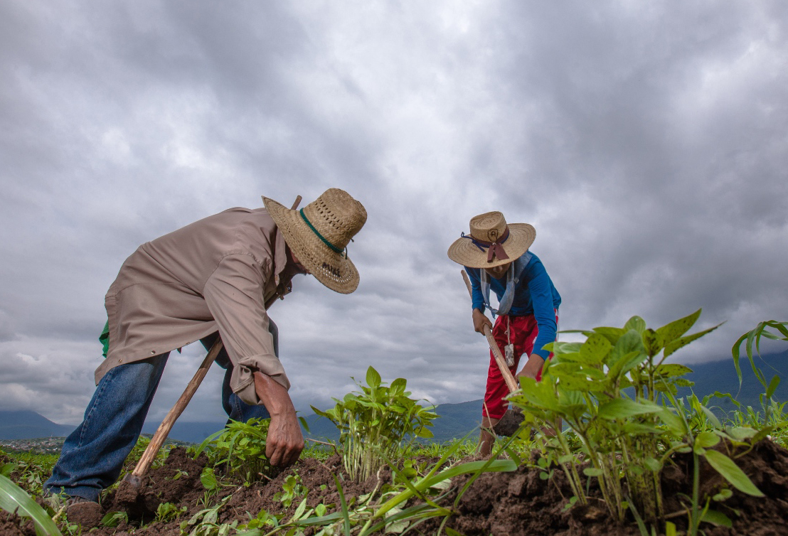
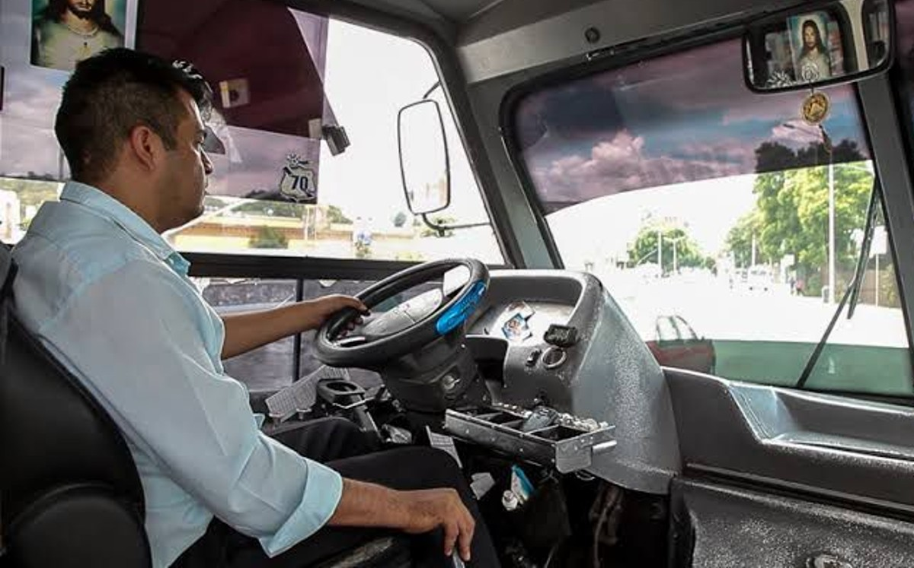
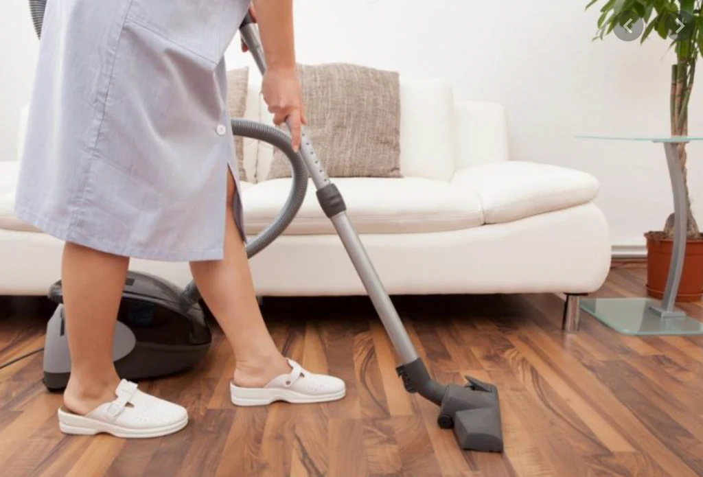

Primer Estudio Nacional del Observatorio sobre
Bienestar Laboral de la Economía Popular en México
Este estudio nace desde y con las personas que viven la economía popular. Tu experiencia, tu voz y tu realidad cotidiana son el centro de la investigación — no solo un dato, sino el punto de partida para construir conocimiento colectivo que genere cambios reales.
¿De qué trata la encuesta?
- Condiciones de trabajo y estabilidad laboral
- Percepción de bienestar económico y emocional
- Acceso a prestaciones y derechos laborales
- Dinámicas de la economía popular y el autoempleo
¿Por qué importa tu voz?
Los datos que recopilemos serán la base de nuestras primeras publicaciones y recomendaciones de política pública. Cada respuesta construye evidencia real sobre la realidad laboral en México.
¿Conoces a alguien que pueda participar? Comparte la encuesta.
El estudio abarca a las y los trabajadores que sostienen la economía popular en México. A continuación, los sectores contemplados — aquí se publicarán sus resultados estadísticos conforme avance la investigación.

Resultados estadísticos · Próximamente

Resultados estadísticos · Próximamente

Resultados estadísticos · Próximamente

Resultados estadísticos · Próximamente

Resultados estadísticos · Próximamente

Resultados estadísticos · Próximamente
Resultados estadísticos · Próximamente